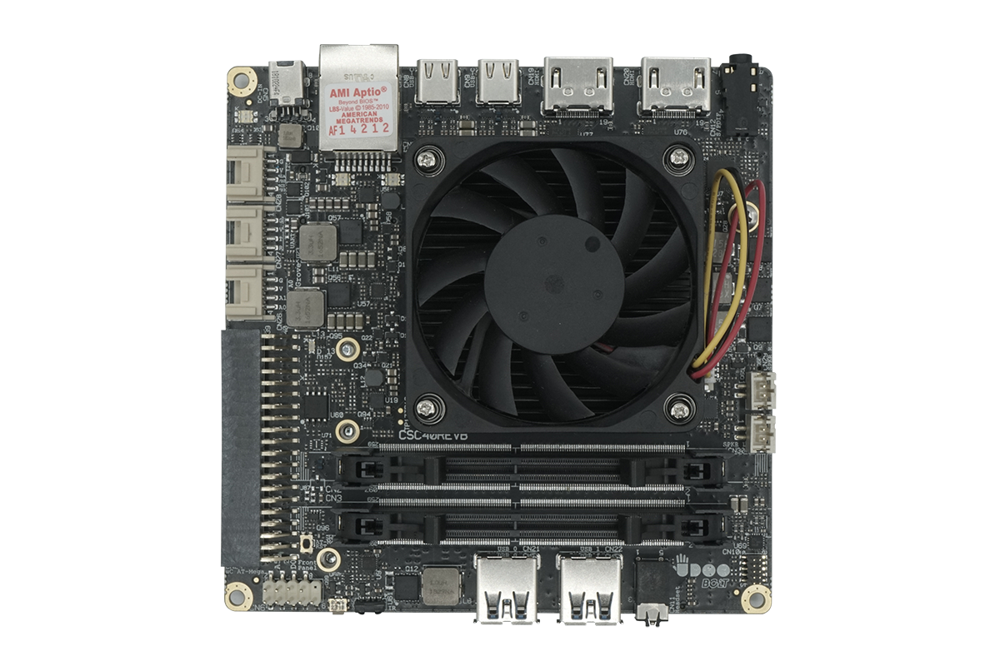

Introduction
UDOO BOLT
UDOO BOLT is a portable, breakthrough supercomputer that goes up to 3.6 GHz thanks to the brand-new AMD Ryzen™ Embedded V1000 SoC, a top-notch APU, multicore CPU with powerful integrated mobile GPU - AMD Radeon™ Vega 8 or AMD Radeon™ Vega 3 Graphics - and an integrated Arduino® Leonardo-compatible platform, all wrapped into one.
On UDOO BOLT you can run all the software available for the PC world, from gaming to video streaming, from graphical editors to professional development platforms, plus all the software for the Arduino® Leonardo world, including all the sketches, libraries and the official Arduino® IDE.
UDOO BOLT embeds two processors:
- the new AMD Ryzen™ Embedded V1000, V1605B or V1202B, 14nm, up to a 4-cores/8-threads CPU, with a thermal design power of just 12-25W, designed for really fast Ultrathin Notebooks. This processor family brings together the breakthrough performance of the pioneering AMD “Zen” CPU and AMD “Vega” GPU architectures in a seamlessly-integrated SoC solution that sets a new standard in processing power for next-generation embedded designs.
- the Microchip ATmega32U4 8-bit AVR microcontroller, the same of Arduino® Leonardo.
While the AMD Ryzen™ Embedded V1000 processor can run all the Windows 10 and Linux 64-bit Distros you want to use as desktop PC, the Microchip ATmega32U4 allows easy access to a Arduino® Leonardo environment.
The main AMD Ryzen™ processor and the ATmega32u4 microcontroller are connected together through an internal USB serial connection, so it is exactly like you have an Arduino® Leonardo connected with a standard PC but all in small size form factor Single Board Computer.
Download the User Manual to have more complete explanation of the UDOO BOLT hardware and features.
Here you can find the Get Started and Safety instruction Manual for a quick installation.
If you find any problem in the proper working of UDOO BOLT you can check the Troubleshooting page.
Heads up! In order to prevent damages to your board, remember to:
- CE and FCC certifications retained using only the UDOO BOLT qualified Power Supply. When not using UDOO BOLT qualified Power Supply, use 19VDC (min 60W power) PSUs certified for your country (make sure that the power cable is less than 3 mt. long).
- CE and FCC certifications retained with the board inside the UDOO BOLT metal case. When not available, we suggest using a case with the same attributes as the UDOO BOLT metal Case.
- This product should be operated in a well-ventilated environment and, if used inside a case, the case should not be covered.
- This product should be elevated on a stable, flat, electrically non-conductive surface whilst in operation, and clear from any object that can induce a short-circuit.
- Do not expose it to water, moisture or heat from any source; UDOO BOLT is designed for reliable operation at normal ambient room temperatures.
- Avoid handling the warm and moving parts (like the fan) and generally the printed circuit board while it is powered.
- Only handle by the edges to minimise the risk of electrostatic discharge damage.
- Take care whilst handling to avoid mechanical or electrical damage to the printed circuit board and connectors. Also use a grounded wrist strap or touch a safely grounded object before you handle components.
- Never provide more than 5V in input to the GPIOs of the Arduino Leonardo-compatible(Atmel® ATmega32U4), and never provide more than 3.3V in input to the GPIOs of the Embedded Controller.
- Do not use a NON-standard USB 3.0 peripheral. If you use a non-standard USB 3.0 peripheral with an external power plug, this could send back the power source to the UDOO BOLT board with the risk of damage.
- The most important safety rule of all: Always Be Careful! (ABC)
Lineup
UDOO BOLT retail line up consists of two models.
- UDOO BOLT V8
- UDOO BOLT V3
Check the Board Versions section to see the differences between the two.
Technical specifications
- Processor:
- CPU AMD Ryzen™ Embedded V1605B SoC up to 3.6 GHz (V8 version)
- CPU AMD Ryzen™ Embedded V1202B SoC up to 3.2 GHz (V3 version)
- GPU:
- AMD Radeon™ Vega 8 Graphics - 8 GPU Compute Units (V8 version)
- AMD Radeon™ Vega 3 Graphics - 3 GPU Compute Units (V3 version)
- RAM:
- 2x SO-DIMM Dual-channel 64-bit DDR4 2400 MT/s with ECC support up to 32GB
- Microchip ATmega32U4 8-bit AVR RISC-based microcontroller.
- Video interfaces:
- 2x HDMI 1.4/2.0a
- 2x USB Type-C (DP alternate mode)
- Storage:
- 1x 32GB internal eMMC 5.0 High Speed Drive
- 1x M.2 Socket 2 Key B 2242/2260 for SSD SATA modules (featured also PCI-e x2)
- 1x M.2 Socket 3 Key M 2280 for NVMe modules (PCI-e x4 Gen 3 interface)
- 1x SATA III 6Gbit/s standard connector
- Networking:
- 1x Gigabit Ethernet LAN interface
- 1x M.2 Key E slot for optional Wireless (WiFi+BT) Combo module
- Audio interfaces:
- HD Audio Codec Realtek ALC888S
- Microphone + Headphone Combo Connector (TRRS)
- Pre-amplified stereo Speaker Connectors (up to 3W)
- Digital Optical audio S/PDIF and analog stereo output combo jack 3.5mm connector
- 2x USB 3.0 type-A sockets
- 2x USB Type-C :
- USB 3.1
- DisplayPort Alternate Mode
- Dual Role Port (DRP) USB Power Delivery (USB-PD) 3.0
- Embedded Controller I/O :
- 2x UART ports*
- 2x I2C interface*
- 1x SPI interface*
- 1x Keyboard Scan interface*
- 1x FAN Controller*
- up to 10x GPIO
- Power In:
- 19V DC Power Jack min 3.15A (60W) for basic functionalities - Male connector 4.5mm x 3.0mm with pin inside.
- 2x USB Type-C power in. PD sink profile 20V/3A(60W).
- RTC Battery Connector + RTC Coin Battery
- Bi-color Power Status LED
- Arduino™ Leonardo-Compatible I/O :
- 12x analog inputs*
- up to 23x digital input/output (7 PWM)*
- 1x UART 1x I2C 1x SPI*
- 3x Grove connectors:
- 1x ANALOG INPUT, 1x UART or DIGITAL I/O, 1x I2C or DIGITAL I/O
- Dimensions: 12cm x 12cm - 4.72” x 4.72”
*Available on Pin Headers
Visit the official accessories.
Community
- Official web site www.udoo.org
- Official web site dedicated page: tbu
- Official forum www.udoo.org/forum
Forums
The official UDOO forums can be found at www.udoo.org/forum
The forum search facility has been tweaked to allow more general searching. Please do a search before making a post as the issue may already have been raised and answered.
IRC channel
There is an (unofficial) UDOO discussion channel on IRC. Using the IRC client of your choice, use server information: irc.freenode.net. Room name is #udoo.